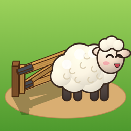

Ranch Gate Riddle
Swing the gates. Guide every animal home.
Help
Each level is a small farm. Tap a gate to swing it 90°: a gate always blocks one path and opens another. Every sheep, pig, goat and chicken walks the shortest way to the pen with its picture and never enters another species' pen. When every animal has a path, press RELEASE.
I'm stuck. What can I do?
Press HINT: it lights up a gate worth turning. Hints, Undo and Reset are always free. Tap an animal to preview its route, or use the eye button to show every route.
What do the stars mean?
Three stars for solving a level in par moves (the fewest possible), two stars within par + 2, otherwise one star.
Why can't I move some gates?
Gates with a padlock are fixed. Plan your route around them.
How do I change the language?
The game follows your iPhone's language. To change only this game: iOS Settings › Apps › Ranch Gate › Language.
Contact
Write to alfreditogames2025@gmail.com.
Privacy policy
Last updated: November 3, 2026
We don't collect personal data ourselves. There are no accounts and no sign-in. Your progress and settings are stored only on your device; deleting the app deletes them. The game does not use the microphone, camera, photos or contacts.
Ads (Google AdMob)
The game is free and shows ads from Google AdMob: occasional ads between levels and optional ads you choose to watch to skip a level. To show and measure ads, Google may collect your device's advertising identifier (only if you allow tracking in Apple's prompt), your IP address and approximate location, how you interact with ads, and crash and performance data. Where the law requires it (for example the EEA, the UK and some US states), Google's consent message asks for your choices first; you can change them any time in Settings › Ranch Pass › Ad choices. You can also turn tracking off in iOS Settings › Privacy & Security › Tracking. Google's policy: policies.google.com/technologies/ads.
Purchases
The Ranch Pass is bought through Apple. Apple processes the payment; we never receive your payment details. The pass removes ads between levels and opens every level.
Ads are only suitable for all audiences (rated G). Questions: alfreditogames2025@gmail.com.
Español
Ayuda
Cada nivel es una pequeña granja. Toca una puerta para girarla 90°: siempre cierra un camino y abre otro. Cada oveja, cerdo, cabra y gallina toma el camino más corto al corral con su dibujo y nunca entra al corral de otra especie. Cuando todos tengan camino, toca SOLTAR. ¿Atascado? PISTA ilumina una puerta que conviene girar; las pistas, deshacer y reiniciar son gratis.
Política de privacidad
Nosotros no recopilamos datos personales. No hay cuentas. El progreso se guarda solo en tu dispositivo y se borra si borras la app. No usa micrófono, cámara, fotos ni contactos.
Anuncios (Google AdMob). El juego es gratis y muestra anuncios de Google AdMob: de vez en cuando entre niveles, y opcionales si decides ver uno para saltar un nivel. Para mostrarlos y medirlos, Google puede recopilar el identificador de publicidad del dispositivo (solo si permites el rastreo en el aviso de Apple), tu dirección IP y ubicación aproximada, cómo interactúas con los anuncios y datos de fallos y rendimiento. Donde la ley lo exige, el mensaje de consentimiento de Google te pregunta primero; puedes cambiar tus opciones en Ajustes › Pase del Rancho › Opciones de anuncios. Política de Google: policies.google.com/technologies/ads.
Compras. El Pase del Rancho se compra a través de Apple; nosotros nunca recibimos tus datos de pago. Contacto: alfreditogames2025@gmail.com.
Português
Ajuda
Cada nível é uma pequena fazenda. Toque numa porteira para girá-la 90°: ela sempre fecha um caminho e abre outro. Cada ovelha, porco, cabra e galinha segue o caminho mais curto até o cercado com o seu desenho e nunca entra no cercado de outra espécie. Quando todos tiverem caminho, toque em SOLTAR. Travou? A DICA ilumina uma porteira que vale a pena girar; dicas, desfazer e reiniciar são grátis.
Política de privacidade
Nós não coletamos dados pessoais. Não há contas. O progresso fica só no seu aparelho e é apagado se você apagar o app. Não usa microfone, câmera, fotos nem contatos.
Anúncios (Google AdMob). O jogo é grátis e mostra anúncios do Google AdMob: de vez em quando entre os níveis, e opcionais se você escolher assistir para pular um nível. Para exibi-los e medi-los, o Google pode coletar o identificador de publicidade do aparelho (só se você permitir o rastreamento no aviso da Apple), seu endereço IP e localização aproximada, como você interage com os anúncios e dados de falhas e desempenho. Onde a lei exige, a mensagem de consentimento do Google pergunta antes; você pode mudar suas escolhas em Ajustes › Passe do Rancho › Opções de anúncios. Política do Google: policies.google.com/technologies/ads.
Compras. O Passe do Rancho é comprado pela Apple; nunca recebemos seus dados de pagamento. Contato: alfreditogames2025@gmail.com.
Confidentialité · Datenschutz · Privacy · プライバシー · 개인정보
Français. Nous ne collectons aucune donnée personnelle et il n'y a pas de compte ; la progression reste sur votre appareil. Le jeu affiche des publicités Google AdMob (entre les niveaux, ou au choix pour passer un niveau). Google peut collecter l'identifiant publicitaire (seulement si vous autorisez le suivi), l'adresse IP, la position approximative, les interactions avec les publicités et des données de diagnostic. Vos choix : Réglages › Pass du ranch › Choix publicitaires. Le pass du ranch est acheté via Apple, qui traite le paiement.
Deutsch. Wir erheben selbst keine personenbezogenen Daten, es gibt kein Konto; der Spielstand bleibt auf deinem Gerät. Das Spiel zeigt Werbung von Google AdMob (zwischen Levels oder freiwillig, um ein Level zu überspringen). Google kann die Werbe-ID (nur wenn du Tracking erlaubst), IP-Adresse, ungefähren Standort, Interaktionen mit Werbung und Diagnosedaten erheben. Deine Auswahl: Optionen › Ranch-Pass › Werbeeinstellungen. Der Ranch-Pass wird über Apple gekauft; Apple wickelt die Zahlung ab.
Italiano. Non raccogliamo dati personali e non c'è un account; i progressi restano sul tuo dispositivo. Il gioco mostra annunci di Google AdMob (tra un livello e l'altro, o a scelta per saltare un livello). Google può raccogliere l'identificativo pubblicitario (solo se consenti il tracciamento), l'indirizzo IP, la posizione approssimativa, le interazioni con gli annunci e dati diagnostici. Le tue scelte: Opzioni › Pass del ranch › Scelte sugli annunci. Il pass del ranch si acquista tramite Apple, che gestisce il pagamento.
日本語。当方は個人情報を収集せず、アカウントもありません。進行状況は端末にのみ保存されます。本ゲームは Google AdMob の広告（レベルの合間、またはレベルをとばすために任意で視聴）を表示します。Google は広告ID（トラッキングを許可した場合のみ）、IPアドレス、おおよその位置情報、広告の操作、診断データを収集することがあります。設定：せってい › 牧場パス › 広告の設定。牧場パスは Apple を通じて購入され、支払いは Apple が処理します。
한국어. 저희는 개인 정보를 수집하지 않으며 계정도 없어요. 진행 상황은 기기에만 저장돼요. 이 게임은 Google AdMob 광고(단계 사이, 또는 단계를 건너뛰려고 직접 선택한 광고)를 보여 줘요. Google은 광고 식별자(추적을 허용한 경우에만), IP 주소, 대략적인 위치, 광고 상호작용, 진단 데이터를 수집할 수 있어요. 설정: 설정 › 목장 패스 › 광고 설정. 목장 패스는 Apple을 통해 구매하며 결제는 Apple이 처리해요.
Contact: alfreditogames2025@gmail.com